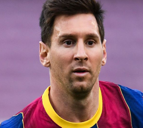
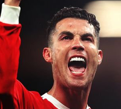

Messi
Mais
Messi é frequentemente considerado o melhor jogador do mundo
e na opinião da grande maioria dos especialistas do esporte,
sua qualidade técnica, jogadas, velocidade, habilidade na perna esquerda,
trabalho de equipe e extraordinária vocação para o gol,
o tornam um dos melhores futebolistas de todos os tempos,
com alguns ainda o colocando como o melhor jogador de sempre.
Ele possui um recorde de sete Bolas de Ouro.
CR7
Mais
Ronaldo tornou-se no jogador mais caro da história do futebol após a sua transferência em 2009 do Manchester United para o Real Madrid, num acordo no valor de 80 milhões de libras esterlinas (94 milhões de euros).[13] Este contrato estabeleceu a sua cláusula de rescisão em 1 000 milhões de euros e estipulou uma quantia anual de 12 milhões de euros, o que fez dele um dos jogadores de futebol mais bem pagos do mundo.
Neymar
Mais
Pela Seleção Brasileira, Neymar estreou com 18 anos e atualmente é o camisa 10, principal jogador e o segundo maior artilheiro da história da Seleção, ficando atrás apenas de Pelé. Disputou a Copa do Mundo FIFA de 2014, onde marcou 4 gols em 5 partidas, mas sofreu uma grave lesão na coluna durante as quartas-de-finais contra a Colômbia, o que o afastou da competição. Havia conquistado o título da Copa das Confederações, sendo a principal estrela brasileira durante os cinco jogos da campanha, onde fez 4 gols e deu 3 assistências, tendo, inclusive, levado o prêmio de melhor jogador da competição e ainda a Chuteira de Bronze.